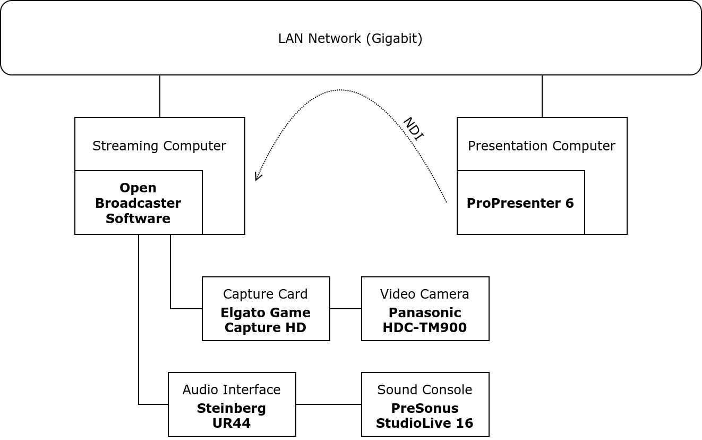

In light of recent announcements from the World Health Organisation, the Australian Government has advised for non-essential gatherings to be limited to 500 people. In taking heed of this advice, churches - including my church - have started to explore avenues of remote and decentralised services.
In this guide we’ll be looking at what your church would need to start live streaming your services for the first time.
Note that this guide is intended for smaller to medium sized churches, who don’t have production budgets in the thousands of dollars…
We won’t be looking at products and equipment from the big names of Blackmagic and the likes.
Before You Start - Questions
Here are some questions you should first consider, as these decisions will shape the structure for your church’s livestream setup and operation.
Unattended Setup - Role Requirement
Is your stage big? Does your pastor move around lots?
Livestreaming will create two new service roles, a Production Switcher and a Camera Operator.
- If you want the livestream to change from your presentation to a live feed, someone will need to operate a switcher.
- If your camera subject moves around regularly, you will need someone to pan the camera and follow the subject.
Music and Copyright
Will you be livestreaming your worship? Are there videos you play?
The majority of churches will most likely have already heard of CCLI, and have a Church Copyright License to display song lyrics.
But if you wish to stream your musical worship segments, you will also need to purchase a Streaming License.
Yes, this means that you will need this license even if you have your own band.
There is also another license you may need to purchase - the Church Video Licence - if you include certain videos.
NOTE - I would advise not to stream third party video clips, but rather censor it out and include the video link.
Equipment
This guide assumes that you have a separate computer for streaming, along with your presentation computer.
I would advise to do so, as streaming can be resource intensive, and can impact the performance of your presentation computer.
If you are a first-time streamer, you will most likely need to purchase some equipment.
Video Camera
You will need a video camera / camcorder with a HDMI program output.
It is advised to get a camera that can (at least) output in 720p (1280x720 progressive).
It is also advised to get a camera that can produce a clean output (No icons or overlays in the video).
Additionally, invest in a tripod to mount the camera on.
If you require to pan the camera to follow the subject, invest in a fluid head tripod instead.
To get the camera output into your computer, you will need a HDMI capture card.
If you are on a very tight budget, you could try to just use a USB Webcam
Audio Interface
Most computers, even in this modern day and age, have a pretty bad inbuilt sound cards.
Invest in an audio interface, which will capture high quality audio.
I would recommend getting one which has at least two inputs.
Note - The gear you need will depend on your existing sound system setup.
If your sound console has a USB port, you may not need an audio interface.
Streaming Encoder
An encoder is a device or application which transmits video over the internet.
There exists physical hardware devices to achieve this, but we’ll be using some free software!
Go grab a copy of Open Broadcaster Software
Internet Connection
The bandwidth of your internet connection will affect the quality of the video that you can stream.
| Quality | Bandwidth |
|---|---|
| 360p | 0.5 Mbps |
| 480p | 1 Mbps |
| 720p | 2.5 Mbps |
| 1080p | 5 Mbps |
| 1440p | 9 Mbps |
| 2160p | 20 Mbps |
Perform a speed test of your network on a wired computer, and compare your upload speed to the above. You will need an upload speed faster than or equal to one of the above qualities to stream at that quality.
Video from Presentations
NDI is a audio/visual protocol developed by NewTek which I currently love.
It allows you to send video as well as audio over your LAN network, making it a breeze to send content from one computer to another.
We’ll be using the NDI protocol to send audio and video content from the presentation computer to the streaming computer.
Ideally, connect both computers to the same gigabit LAN network - try to avoid going wireless, and use CAT 5E or better Ethernet cables.
To receive the NDI streams in Open Broadcaster Software, install the NDI Plugin for OBS.
You may also need NDI Tools (Windows | Mac), but don’t download this just yet, until you finish reading the next section.
PowerPoint
NDI Scan Converter
As PowerPoint does not have integrated NDI functionality, we can use the Scan Converter program from the NDI Tools suite.
Other
While writing this post, I stumbled upon this project - https://github.com/ykhwong/ppt-ndi.
Perhaps it works, but I haven’t tried it.
ProPresenter 6
Alpha Key / SDI Module
If you have purchased either the Alpha Key module or the SDI module, then you will have the required NDI functionality.
NDI Scan Converter
If you have not purchased the Alpha Key nor SDI module, you can use the Scan Converter application
ProPresenter 7
ProPresenter 7 comes with NDI functionality built-in at no extra cost!
Other Applications
In most cases, the Scan Converter application will work.
Audio from Presentations
If using ProPresenter’s NDI module, the audio will be embedded in the NDI stream.
With the Scan Converter application, you can select which output device is transmitted over the network.
Audio from Sound System
You will probably need some cables to connect your sound system to the audio interface that you may need to purchase.
Example Gear and Setup Diagram
This is how my church has their equipment set up.
| Category | Item |
|---|---|
| Video Camera | Panasonic HDC-TM900 |
| Capture Card | Elgato Game Capture HD |
| Audio Interface | Steinberg UR44 |
| Streaming Encoder | OBS |
| Presentation Software | ProPresenter 6 |

Setup
Installation
- Install Open Broadcaster Software
- Install the NDI Plugin for OBS
- (optional) Install NDI Tools (Windows | Mac)
- Connect audio interface to computer
- May need to install drivers
- Connect sound console to audio interface
- Connect capture card to computer
- May need to install drivers
- Connect camera to capture card
OBS Setup
- Create an NDI source - pointed to the NDI stream from your presentation computer
- Create a Video Capture source - pointed to the capture card
- Create an Audio Input source - pointed to the audio interface
- Rearrange and resize the sources to your liking.
NOTE - I would advise to create four scenes, with the PIP scenes nesting the base scenes.
Presentation- NDI and Audio Input sourcesCamera- Video Capture and Audio Input sourcesCamera w/ PIP Presentation- NDI source in the corner, on top of theCamerascenePresentation w/ PIP Camera- Video Capture source in the corner, on top of thePresentationscene
NOTE - Your capture card will more than likely have some video delay, you will need to account for this delay so that video and audio will be in sync.
You can do this by right clicking on the Audio Input source, and adjusting the offset in the Advanced options.
Stream Setup
Create a YouTube account, then go to the streaming dashboard and create a new stream.
Then copy the Stream Key, and paste it into OBS.
Select Start Streaming
Advice
TEST YOUR STREAM BEFORE GOING LIVE
- Audio levels
- Lighting
- Delay
Censor copyrighted audio and video content
- Replace the content with a link to the content as to avoid copyright claims
Don’t start streaming until there is content in the stream
- A stream that begins with a black stream may be flagged by your streaming provider and be taken down.
Send a “broadcast mix” from the sound console to the audio interface
- The “in-house mix” will not the sound the same through a pair of headphones!
Camera Operators
- Pan the camera slowly
- Don’t follow the subject too frantically
- Visualise a boxed area over the subject, only pan the camera if they move out of the box